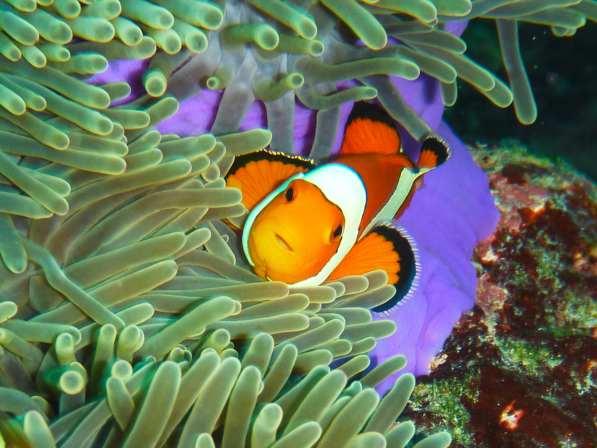
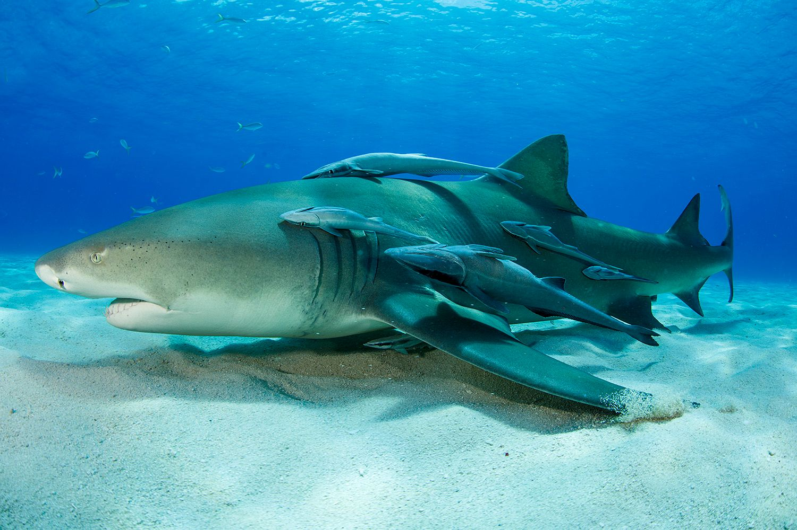
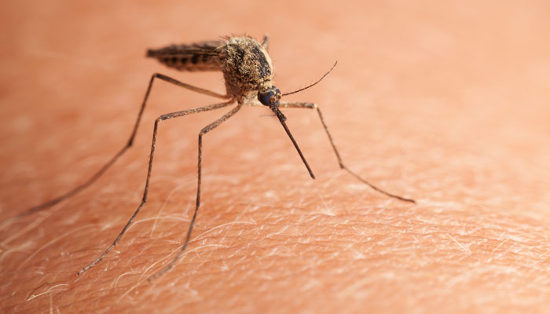

Mutualism
Mutualism is one of the three main symbiotic relationships. This is when two species interact with each other to gain mutual benefits. An example of this relationship is present between Amphiprioninae (clownfish) and Actiniaria (sea anemone). Sea anemones provide shelters for clownfish, and clownfish provide the sea anemone with fresh, oxygenated water. Clownfish use sea anemones as shelters from their preys because their predators cannot catch the clownfish once they are in their shelters. Their predators cannot enter these anemones due to their nematocysts. Only fish that could enter sea anemones without being harmed are fish with thick layers of mucus like clownfish - clownfish have mucus layers that are six times thicker than those of ordinary fish. In return, the clownfish performs a wiggle dance to increase the flow of fresh seawater to their sea anemone hosts, helping them breathe and grow faster. Since both species gain benefits, this is a mutualistic relationship.

Commensalism
The second symbiotic relationship is called commensalism. Unlike mutualism, commensalism is when only one of the two species gains benefits and the other is niether harmed nor benefited. Two speicies that engage in this relationship are remora fish (suckerfish) and sharks. In this relationship, the only species that gain benefits are the remora fish. Remora fish attach themselves to the shark's body in order to gain protection from their predators and also to eat any leftover food from the shark; the shark is niether harmed nor benefited. The interaction between these two species evidently shows commensalism.

Parasitism
The final symbiotic relationship is parasitism. This relationship involves two species: a parasite and a host. In this relationship, the parasite gains benefits while the host is harmed. A clear example of a parasitic relationship can be seen between mosquitos and humans. A mosquito sticks its proboscis into a human's skin and extract blood as a food source. Even a mosquito bite may see insignificant - since it doesn't hurt very much - it can have a devastating effect on the host if it is carrying a disease such as malaria, dengue fever, yellow fever, encephalitis, zika, and etc.
